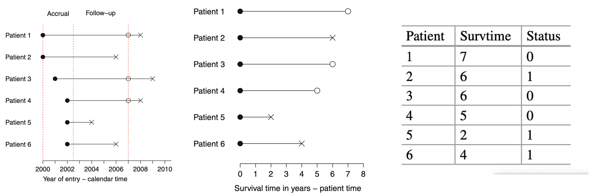

1 Introduction
1.3 Survival Data and Censoring
response variable, time-to-event, is a non-negative discrete or continuous random variable
censoring, right censoring, results when the final endpoint is only known to exceed a particular value
\(T^*\) is a random variable representing the time to failure
U is a random variable representing the time to a censoring event
what we observe is \(T=min(T^*,U)\) and a censoring indicator \(\delta=I[T^*<U]\). \(\delta\) is 0 when T is a censored time, or 1 when T is observed.
right-censoring, left-censoring (less common)
Three types: - Type I, the censoring times are pre-specified - Type II, follow-up stops when a pre-specified fraction have failed - Random. Patient dropout. Competing events. Administrative censoring.
Example 1.1. clinial trail; accural period + follow-up period

administrative censoring; patient dropout: non-informative (unrelated) vs informative (related to the failure process)
The goals of surivival analysis
- estimate the survival distribution
- compare two or more survival distributions
- assess the effects of a number of factors on survival
1.4 Some examples of survival data sets
Example 1.2. Xelox (chemotherapy drug) in patients with advanced gastric (胃) cancer
Progression-free survival: the time from entry into the clinical trial until progression or death, whichever comes first
Wang et al. Cancer Chemother. Pharmacol 2014
#install.packages("asaur")
library(asaur)
gastricXelox[23:27,]## timeWeeks delta
## 23 42 1
## 24 43 1
## 25 43 0
## 26 46 1
## 27 48 0Example 1.3 Pancreatic cancer (胰腺癌) in patients with locally advanced or metastatic disease
Moss et al., Gastrointest. Cancer Res. 2012
head(pancreatic)## stage onstudy progression death
## 1 M 12/16/2005 2/2/2006 10/19/2006
## 2 M 1/6/2006 2/26/2006 4/19/2006
## 3 LA 2/3/2006 8/2/2006 1/19/2007
## 4 M 3/30/2006 . 5/11/2006
## 5 LA 4/27/2006 3/11/2007 5/29/2007
## 6 M 5/7/2006 6/25/2006 10/11/2006### stage column: M means metastatic; LA means locally advancedExample 1.4 survival prospects of prostate cancer patients (前列腺癌) with high-risk disease
Lu-Yao et al., J. Am. Med. Assoc, 2009
prostateSurvival[88:95,]## grade stage ageGroup survTime status
## 88 poor T2 75-79 33 0
## 89 mode T2 75-79 6 0
## 90 mode T1c 75-79 15 2
## 91 mode T2 70-74 6 2
## 92 mode T1ab 80+ 93 1
## 93 poor T2 80+ 60 2
## 94 mode T2 80+ 1 0
## 95 mode T1ab 75-79 34 0### grade: poorly or moderately differentiated
### cancer stage: T1c if screen-diagnosed using a prostate-specific antigen blood test, T1ab if clinically diagnosed without screening, or T2 if palpable at diagnosis
### surival time: days from diagnosis to death or date last seen
### status: 1 if died of prostate cancer, 2 if died of some other cause, or 0 still alive at the date last seenExample 1.5 Comparison of medical therapies to aid smokers to quit
triple-mdication combination vs therapy with the nicotine patch alone
time from randomization until relapse (return to smoking); censored at six months
Steinberg Ann. Intern. Med 2009
pharmacoSmoking[1:6, 2:8]## ttr relapse grp age gender race employment
## 1 182 0 patchOnly 36 Male white ft
## 2 14 1 patchOnly 41 Male white other
## 3 5 1 combination 25 Female white other
## 4 16 1 combination 54 Male white ft
## 5 0 1 combination 45 Male white other
## 6 182 0 combination 43 Male hispanic ft# ttr: time to relapse/the number of days without smoking
# employment: ft (full time), pt (part time), or otherExample 1.6 Prediction of survival of hepatocellular carcinoma (肝细胞癌) patients using biomarkers
hepatoCellular[c(1,2,3,65,71),c(2,3,16:20,24,47)]## Age Gender OS Death RFS Recurrence CXCL17T CD4N Ki67
## 1 57 0 83 0 13 1 113.94724 0 6.04350
## 2 58 1 81 0 81 0 54.07154 NA NA
## 3 65 1 79 0 79 0 22.18883 NA NA
## 65 38 1 5 1 5 1 106.78169 0 44.24411
## 71 57 1 11 1 11 1 98.49680 0 99.59232# OS: overall survival
# RFS: recurrence-free survival